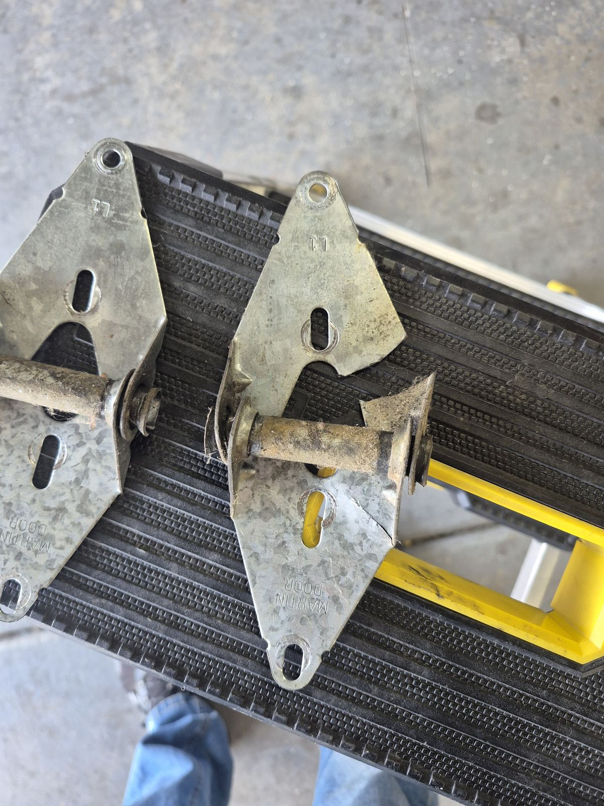

Taylorsville 84118 · 84123 · 84129
Garage Door Repair in Taylorsville, UT
Taylorsville is just north of West Jordan, and many of its garage doors have been working for decades. We repair, tune, and replace them.
Licensed & Insured Utah Contractor
Based in West Jordan
5-Star Google Rating
Open 24 Hrs Mon–Thu
Local Service in Taylorsville
Garage Doors in an Established City
Taylorsville incorporated as a city in 1996, but most of its neighborhoods are much older. Streets off Redwood Road, 4700 South, and 5400 South are lined with ramblers, split-levels, and two-story homes, many built in the 1960s, '70s, and '80s. A lot of those homes have one- or two-car garages with original or second-generation doors.
The city's landmarks are close to home for most residents: Valley Regional Park on 2700 West, which hosts Taylorsville Dayzz every summer; the Mid-Valley Performing Arts Center on Taylorsville Boulevard near City Hall; and the SLCC Taylorsville Redwood Campus. The Jordan River Parkway runs along the city's east side.
From our West Jordan shop, Taylorsville is a quick drive up Bangerter Highway or Redwood Road, so a door stuck open on a weeknight doesn't have to stay that way. Monday through Thursday, we're available around the clock. On the weekend, call between 5 AM and 4 PM.

Serving ZIP 84118, 84123 & 84129
Repairs Taylorsville Homes Need Most
Extension springs and missing safety cables
Many older Taylorsville doors lift with extension springs alongside the tracks. Over time they lose tension, and without safety cables a breaking spring can fly loose. We replace them in pairs, add safety cables, or talk with you about converting to torsion springs.
Wood and thin steel doors
Some homes still have wood doors or thin, uninsulated steel ones. Wood dries, cracks, and swells through Utah's dry summers and snowy winters, and thin steel dents easily. If the panels are sound we repair them; if not, an insulated steel door is a big upgrade.
Openers past their prime
A 25-year-old opener can still run but may lack modern safety reversal, rolling-code security, or a quiet drive. We'll test the safety reversal and tell you where it stands.
Garages used for storage and projects
When the garage is a workshop or storage space, the door is the biggest opening in the house. New weatherstripping and an insulated door cut drafts in winter and heat in summer.
Garage Door Services in Taylorsville
Extension and torsion spring replacement, with safety cables added where needed.
Garage Spring RepairTaylorsville Garage Door FAQ
Do you serve all of Taylorsville?
Yes, including the 84118, 84123, and 84129 ZIP codes, from the Jordan River west to the Bangerter Highway area.
Can you repair a wooden garage door?
Often. We can replace springs, rollers, hinges, and seals on wood doors. Badly cracked or rotted panels usually mean it's time for a new door.
How do I tell whether I have extension or torsion springs?
Look above the closed door. A spring wrapped around a bar across the top is a torsion system. Long springs running beside the horizontal tracks near the ceiling are extension springs. Either way, don't adjust them yourself.
Can you add an automatic opener to a manual door?
Usually, as long as the door is balanced and in good shape. We check the door first, then install and adjust the opener and its safety sensors.
Nearby Areas We Serve
Neighbors of Taylorsville can reach the same crew. See every city on our service areas page.
Call Quick Fix Garage Doors
Stuck door, snapped spring, or dead opener in Taylorsville? Call for a fast, free estimate.
801-641-6850Mon–Thu: open 24 hours · Fri: 12 AM–8 PM · Sat & Sun: 5 AM–4 PM